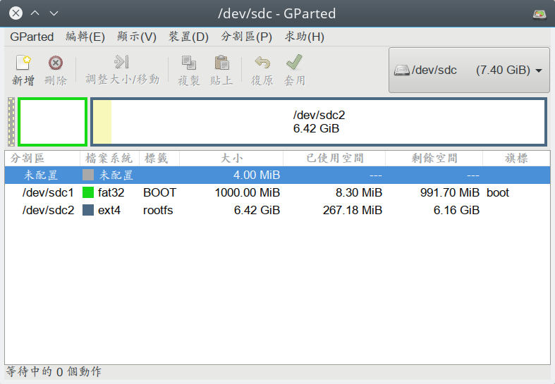

在 zybo board 開發記錄: 執行 Linux 作業系統 一文中，我們提到了如何自行編譯 u-boot、Linux kernel、busybox 來讓 Zybo Board 可以開機進到 SD 卡上的 Linux 系統。這一次，我們要來談談怎樣使用 Yocto Project 來建立 Zybo board 的 Linux 系統。
Yocto Project 是近年來各大 SoC 商以及開發板商皆參與的 Linux 系統構件工具，透過 Yocto Project 的協助，使用者可以針對自己的需求構件想要的映像檔(image)或是 Root File System，和 Yocto 類似功能的工具則是 buildroot 。
本文將以 Zybo Board 作為目標開發板，示範如何使用 Yocto 來構件他的系統。
預先準備
根據你使用的 Linux 發行板的不同，你需要安裝一些套件，這邊列出一些發行板的資訊，詳細請參考 Yocto Project Reference Manual
Debian/Ubuntu
coldnew@debian ~ $ sudo apt-get install gawk wget git-core diffstat unzip texinfo gcc-multilib build-essential chrpath socat
Fedora
coldnew@fedora ~ $ sudo dnf install gawk make wget tar bzip2 gzip python unzip perl patch diffutils diffstat git cpp gcc gcc-c++ glibc-devel texinfo chrpath ccache perl-Data-Dumper perl-Text-ParseWords perl-Thread-Queue socat findutils which
Gentoo
coldnew@gentoo ~ $ emerge -v dev-vcs/git dev-util/diffstat app-arch/unzip sys-apps/texinfo app-admin/chrpath media-libs/libsdl2 sys-apps/iproute2 x11-terms/xterm net-nds/rpcbind
如果你和我一樣，使用 Gentoo Linux 的話，在 Gentoo Linux 下要確認你使用的是 Python 2.7
coldnew@gentoo ~ $ eselect python set python2.7 eselect python list Available Python interpreters: [1] python2.7 * [2] python3.2 [3] python3.3 python Python 2.7.5 (default, Oct 19 2013, 22:52:27)
格式化 MicroSD 卡
在這次的開發中，我們要設定 MicroSD 卡片成兩個分區，第一個是 fat32 格式，第二個則使用 ext4 格式，若不會使用 fdisk 命令的話，可以透過 gparted 來進行格式化，以下是我格式化卡片的範例 (8GB 卡片)。

下載 Poky
在開始用 Yocto Project 之前，我們需要下載 Poky, Poky 是 Yocto 的構件系統，基本上我們會用到的東西都會在 poky 資料夾內
注意到我們這邊切換到 krogoth 這個分支，Yocto 裡面不同的分支(branch) 代表了不同版本。
coldnew@gentoo ~ $ git clone git://git.yoctoproject.org/poky -b krogoth
好了後，進入到 poky 資料夾
coldnew@gentoo ~/poky $ cd poky
下載 meta-xilinx
Yocto 對於不同的 SoC 廠商，會有提供不同的 layer 來對特定的開源程式加上合適的 patch，或是添加不同 SoC 廠各自需要的韌體(firmware)，以及各開發板特定的設定。
在 Xilinx 平台上，我們需要下載 meta-xilinx ，我們需要的 kernel 以及 Zybo board 的設定資訊都在裡面。
這邊一樣切換到 krogoth 這個分支(branch)
coldnew@gentoo ~/poky $ git clone git://github.com/Xilinx/meta-xilinx -b krogoth
切換到編譯用目錄
接下來，我們將透過 source 指令暫時修改當前 shell 的環境變數，並切換到 build 資料夾
coldnew@gentoo ~/poky $ source oe-init-build-env build
You had no conf/local.conf file. This configuration file has therefore been
created for you with some default values. You may wish to edit it to, for
example, select a different MACHINE (target hardware). See conf/local.conf
for more information as common configuration options are commented.
You had no conf/bblayers.conf file. This configuration file has therefore been
created for you with some default values. To add additional metadata layers
into your configuration please add entries to conf/bblayers.conf.
The Yocto Project has extensive documentation about OE including a reference
manual which can be found at:
http://yoctoproject.org/documentation
For more information about OpenEmbedded see their website:
http://www.openembedded.org/
### Shell environment set up for builds. ###
You can now run 'bitbake <target>'
Common targets are:
core-image-minimal
core-image-sato
meta-toolchain
meta-ide-support
You can also run generated qemu images with a command like 'runqemu qemux86'
預設的目標機器是 qemux86 因此我們需要修改一下，不過先看一下當前目錄結構
coldnew@gentoo ~/poky/build $ tree .
. <b>
└── conf <b>
├── bblayers.conf
├── local.conf
└── templateconf.cfg
1 directory, 3 files
我們首先要修改 conf/bblayers.conf ，在上面添加我們剛剛下載的 meta-xilinx ，修改完會像這樣
# POKY_BBLAYERS_CONF_VERSION is increased each time build/conf/bblayers.conf # changes incompatibly POKY_BBLAYERS_CONF_VERSION = "2" BBPATH = "${TOPDIR}" BBFILES ?= "" BBLAYERS ?= " \ /home/coldnew/poky/meta \ /home/coldnew/poky/meta-poky \ /home/coldnew/poky/meta-yocto-bsp \ /home/coldnew/poky/meta-xilinx \ "
接下來，修改 conf/local.conf ，這份檔案可以用來設定要編譯的目標機器，在這邊，我們將目標機器改成 zybo-linux-bd-zynq7
MACHINE ??= "zybo-linux-bd-zynq7"
都改好了後，就可以開始準備編譯了
編譯 core-image-minimal
Yocto 下有許多預設的 image 可以進行編譯，其中最基本的 image 就是 core-image-minimal 了，裡面只會包含一些幾本的組件而已，我們可以透過他來確認我們編譯出來的 rootfs 是否能用。
coldnew@gentoo ~/poky/build $ bitbake core-image-minimal Parsing recipes: 100% |#######################################################################################################################| Time: 00:01:03 Parsing of 883 .bb files complete (0 cached, 883 parsed). 1313 targets, 71 skipped, 0 masked, 0 errors. NOTE: Resolving any missing task queue dependencies Build Configuration: BB_VERSION = "1.30.0" BUILD_SYS = "x86_64-linux" NATIVELSBSTRING = "Gentoo-2.3" TARGET_SYS = "arm-poky-linux-gnueabi" MACHINE = "zybo-linux-bd-zynq7" DISTRO = "poky" DISTRO_VERSION = "2.1.1" TUNE_FEATURES = "arm armv7a vfp thumb neon callconvention-hard cortexa9" TARGET_FPU = "hard" meta meta-poky meta-yocto-bsp = "krogoth:aad7166704021d82ad3a5ec468552f8f10360d41" meta-xilinx = "krogoth:dcd1c218f943c3657b138cb05012c90c65f32a35" NOTE: Fetching uninative binary shim from http://downloads.yoctoproject.org/releases/uninative/1.0.1/x86_64-nativesdk-libc.tar.bz2;sha256sum=acf1e44a0ac2e855e81da6426197d36358bf7b4e88e552ef933128498c8910f8 NOTE: Preparing RunQueue NOTE: Executing SetScene Tasks NOTE: Executing RunQueue Tasks Currently 4 running tasks (78 of 2127): 0: gcc-source-5.3.0-5.3.0-r0 do_unpack (pid 10582) 1: m4-native-1.4.17-r0 do_configure (pid 14097) 2: binutils-cross-arm-2.26-r0 do_unpack (pid 14533) 3: glibc-initial-2.23-r0 do_fetch (pid 15428)
接下來因為這是第一次編譯，Yocto 需要下載原始碼以及進行編譯，會花很多時間，所以這時候可以去睡個覺或是看看書等它編譯完成，第二次編譯後會因為有快取機制 (cache)，就不須要花這樣多的時間來進行編譯囉~
編譯好了以後，我們切入到 tmp/deploy/images/zybo-linux-bd-zynq7/ 資料夾，裡面有的就是我們需要的檔案
coldnew@gentoo ~/poky/build $ ls tmp/deploy/images/zybo-linux-bd-zynq7/ bitstream modules--4.4-xilinx+git0+89cc643aff-r0-zybo-linux-bd-zynq7-20160910030958.tgz bitstream-+gitAUTOINC+63ca49fe02-r0.bit modules-zybo-linux-bd-zynq7.tgz boot.bin README_-_DO_NOT_DELETE_FILES_IN_THIS_DIRECTORY.txt boot.bin-zybo-linux-bd-zynq7 u-boot-dtb.img boot.bin-zybo-linux-bd-zynq7-v2016.03+gitAUTOINC+df61a74e68-r0 u-boot.elf core-image-minimal-zybo-linux-bd-zynq7-20160910030958.rootfs.cpio u-boot-zybo-linux-bd-zynq7.elf core-image-minimal-zybo-linux-bd-zynq7-20160910030958.rootfs.cpio.gz.u-boot u-boot-zybo-linux-bd-zynq7.img core-image-minimal-zybo-linux-bd-zynq7-20160910030958.rootfs.manifest u-boot-zybo-linux-bd-zynq7-v2016.03+gitAUTOINC+df61a74e68-r0.elf core-image-minimal-zybo-linux-bd-zynq7-20160910030958.rootfs.tar.gz u-boot-zybo-linux-bd-zynq7-v2016.03+gitAUTOINC+df61a74e68-r0.img core-image-minimal-zybo-linux-bd-zynq7.cpio uImage core-image-minimal-zybo-linux-bd-zynq7.cpio.gz.u-boot uImage--4.4-xilinx+git0+89cc643aff-r0-zybo-linux-bd-zynq7-20160910030958.bin core-image-minimal-zybo-linux-bd-zynq7.manifest uImage-zybo-linux-bd-zynq7.bin core-image-minimal-zybo-linux-bd-zynq7.tar.gz zybo-linux-bd-zynq7.dtb download.bit
我們將以下這些檔案複製到 SD 卡的第一個分區
bitstream boot.bin u-boot-dtb.img uImage zybo-linux-bd-zynq7.dtb
接下來，在 SD 卡的第一個分割區 (fat32) 建立 uEnv.txt 檔案，用來告訴 u-boot 開機的方式
kernel_image=uImage devicetree_image=zybo-linux-bd-zynq7.dtb bootargs=root=/dev/mmcblk0p2 rw rootwait uenvcmd=fatload mmc 0 0x3000000 ${kernel_image} && fatload mmc 0 0x2A00000 ${devicetree_image} && bootm 0x3000000 - 0x2A00000
好了後，將 core-image-minimal-zybo-linux-bd-zynq7.tar.gz 解壓縮到 SD 卡的第二個分割區
coldnew@gentoo /tmp/sdc2 $ sudo tar xvf ~/poky/build/tmp/deploy/images/zybo-linux-bd-zynq7/core-image-minimal-zybo-linux-bd-zynq7.tar.gz
如果你需要 kernel modules 的話，將 modules-zybo-linux-bd-zynq7.tgz 解壓到 SD 卡的第二個分割區
coldnew@gentoo /tmp/sdc2 $ sudo tar xvf ~/poky/build/tmp/deploy/images/zybo-linux-bd-zynq7/modules-zybo-linux-bd-zynq7.tgz
至此，我們 SD 卡開機的準備已經完成!!
測試開機與結果
是時候來測試結果了，要注意到你的 Zybo Board 的 JP5 要設定成下面這樣，這樣給電時，Zynq 才會讀取 SD 卡上面的 u-boot 並將位元流 (bitstream) 燒錄到 FPGA 中。
插入剛剛建立好的 SD 卡，並提供電源後，我們可以使用可以接收 UART 相關的程式，如 gtkterm、teraterm、screen、emacs 等，啟動它並開啟 /dev/ttyUSB1 後，設定 baudrate 為 115200 ，就可以看到開機並進入到 rootfs 囉。